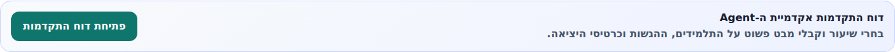
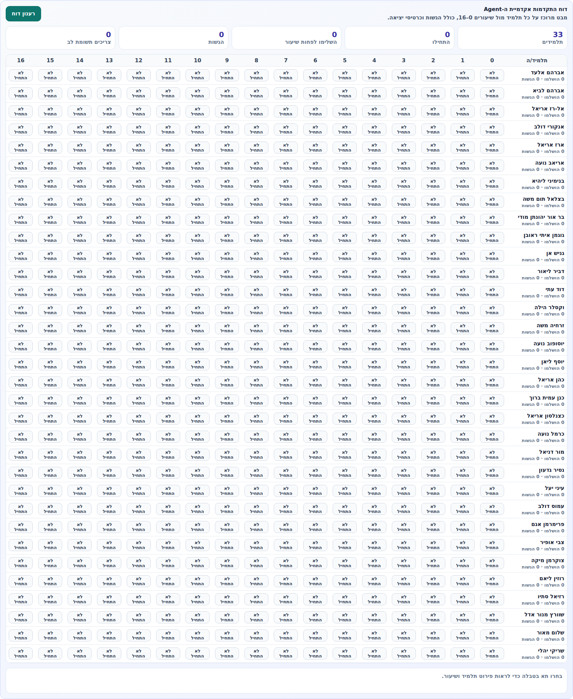
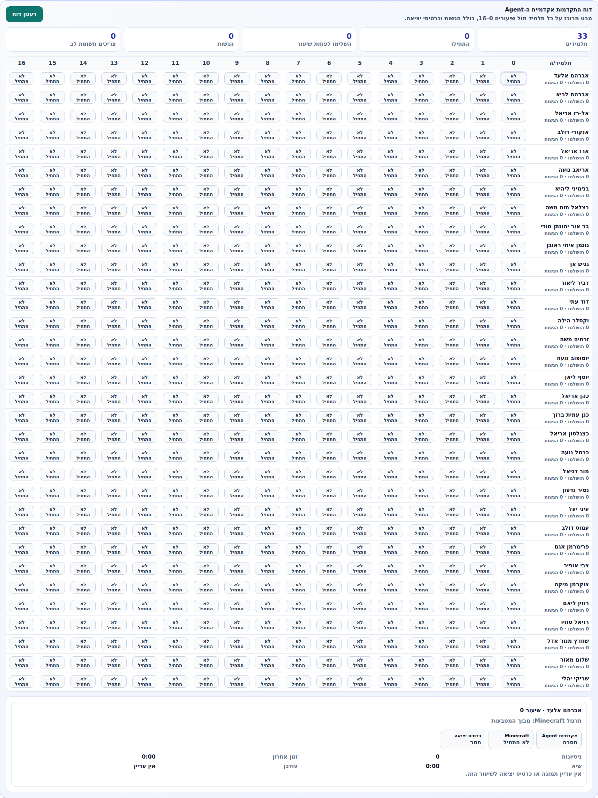

robotics.hai.tech | ממשק מורה | גרסה פרוסה אחרי קומיט dcf3d40
הדשבורד החדש נותן למורה מבט מרוכז על כל תלמיד בכיתה מול שיעורים 0-16:
מי התחיל, מי השלים לפחות שיעור, כמה הגשות קיימות, ומי צריך תשומת לב.
זהו דשבורד קריאה בלבד. הוא לא משנה ציונים, לא משנה קודי תלמידים ולא נוגע בלומדות אחרות.
הוא מופיע רק בכיתות שקיבלו גישה לאקדמיית ה-Agent.
איך המורה מגיעה לדשבורד
המורה נכנסת ל-teacher-classrooms.html עם מייל וסיסמה.
בכרטיס הכיתה שלה מופיע אזור בשם דוח התקדמות אקדמיית ה-Agent.
לחיצה על פתיחת דוח התקדמות טוענת את מצב הכיתה.

כרטיס הכיתה בממשק המורה. הדשבורד מופיע בתוך הכיתה, מתחת לניהול הלומדה.
מה רואים בדוח המרוכז
בראש הדוח יש סיכום כיתתי מהיר: מספר תלמידים, כמה התחילו לעבוד, כמה השלימו לפחות שיעור,
כמה הגשות קיימות, וכמה תלמידים צריכים תשומת לב.
מתחת לזה מופיעה טבלת מעקב: שורות הן תלמידים, עמודות הן שיעורים 0-16.
כל תא מציג סטטוס קצר: לא התחיל, בתהליך או הושלם.

טבלת תלמידים מול שיעורים. כרגע הכיתות חדשות ולכן רוב התאים מסומנים "לא התחיל".
מה קורה כשלוחצים על תלמיד ושיעור
לחיצה על תא בטבלה פותחת פירוט של אותו תלמיד באותו שיעור.
הפירוט מחבר את שלושת חלקי הלמידה המרכזיים:
אקדמיית Agent
האם התלמיד השלים את פעילות התכנות/Blockly/Python של השיעור.
Minecraft
האם התלמיד התחיל או השלים את המשימה בעולם Minecraft.
כרטיס יציאה
האם התלמיד הגיש תשובה או תמונה בסוף השיעור.
נתוני ניסיון וזמן
מספר ניסיונות, זמן אחרון, שיא זמן ותאריך עדכון אחרון.

פירוט תא: סטטוס Agent, סטטוס Minecraft, כרטיס יציאה, ניסיונות וזמנים.
מה המורה יכולה לעשות מהדשבורד
לראות תוך כמה שניות מי התחיל ומי עדיין לא התחיל.
לזהות תלמידים שנתקעו: התחילו פעילות אבל לא השלימו אותה.
לפתוח פירוט לתלמיד ספציפי ולשיעור ספציפי.
לראות האם קיימת הגשה של כרטיס יציאה או תמונה.
לרענן את הדוח בזמן שיעור כדי לראות התקדמות חדשה.
מה הדשבורד לא עושה
הוא לא שומר סיסמאות Minecraft.
הוא לא משנה קודי כניסה של תלמידים.
הוא לא פותח גישה ללומדות אחרות.
הוא לא נועל או משנה את זרימת השיעורים עצמה.
ההמלצה שלי: להציג את זה למורה כ"מסך בקרה לשיעור".
היא לא צריכה להבין API או DB. היא רק צריכה לדעת: פותחים כיתה, לוחצים על דוח התקדמות,
ורואים מי עשה מה.